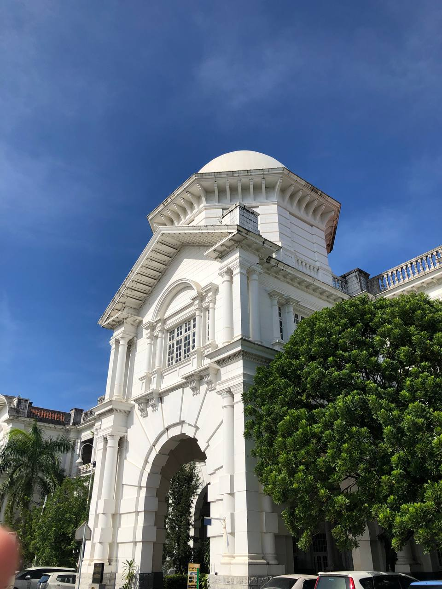
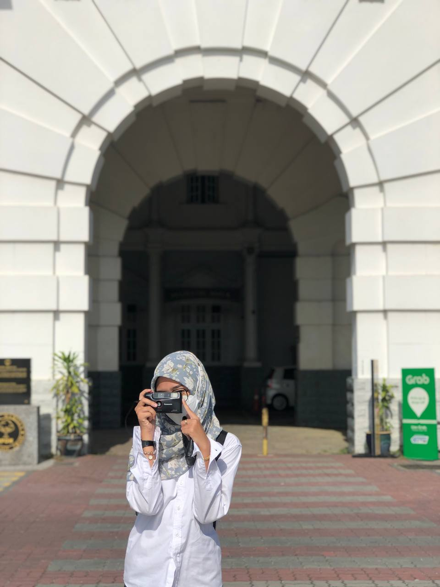
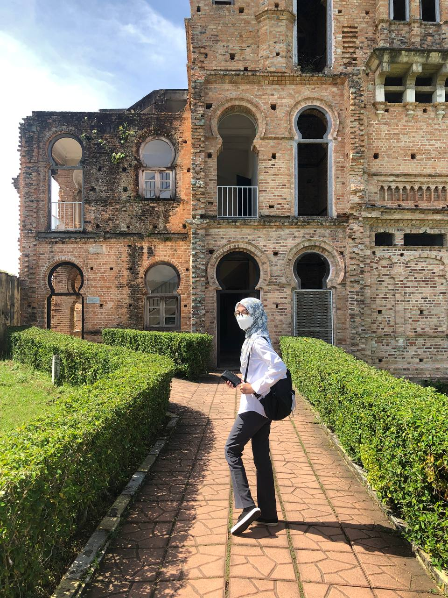
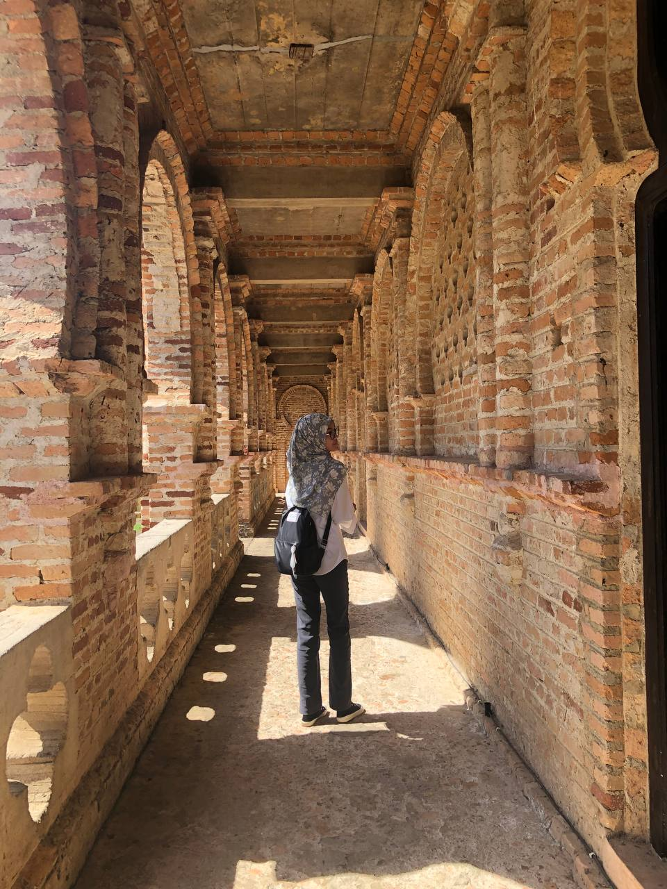

PERAK
PERAK IN OLD CASTLE
1.Ipoh Railway Station: Icon of Colonial Elegance and Malaysian Heritage
Situated in the center of Ipoh, Malaysia, the Ipoh Railway Station is a tribute to the architectural magnificence and rich history of the city. For more than a century, this recognizable train station which is distinguished by its unique British colonial architecture has been both a city entrance and a representation of Malaysia's railroad history.The Ipoh Railway Station is a shining example of Malaysian history and colonial grandeur. It is a must visit location for anybody studying Ipoh and Malaysia's railway history because of its distinctive architecture, historical significance, and cultural influence. The station is a testimony to the continuing legacy of colonial architecture in Southeast Asia as well as a timeless symbol of Malaysia's history, even as it continues to change with the times.


2.Kellie's Castle: A Tale of Ambition and Tragedy in Perak
Kellie's Castle, perched majestically amidst Batu Gajah, Perak's beautiful foliage, serves as a moving reminder of a time when hopes, ambition, and unanticipated tragedy characterized the past. This famous site, known for its historical intrigue and architectural magnificence, enthralls tourists with its haunting beauty and gripping tale.More than just a historical site, Kellie's Castle is a monument to tragedy, ambition, and the timeless appeal of opulence in architecture. Its alluring beauty and emotional history make it an essential trip for anybody interested in learning more about Perak's and Malaysia's rich cultural heritage. Leaving a lasting impression of Malaysia's rich legacy and the unwavering spirit of its builders, Kellie's Castle enables visitors to journey back in time and discover the secrets that lie beyond its weathered walls. It continues to inspire amazement and curiosity.

